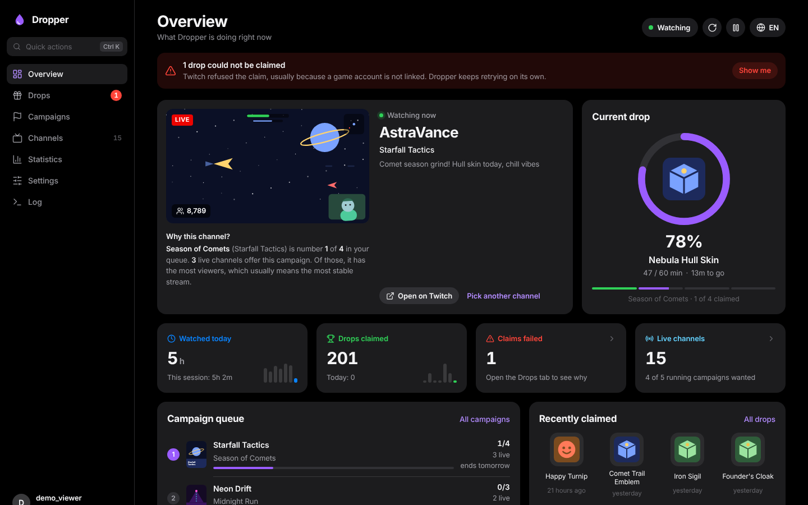
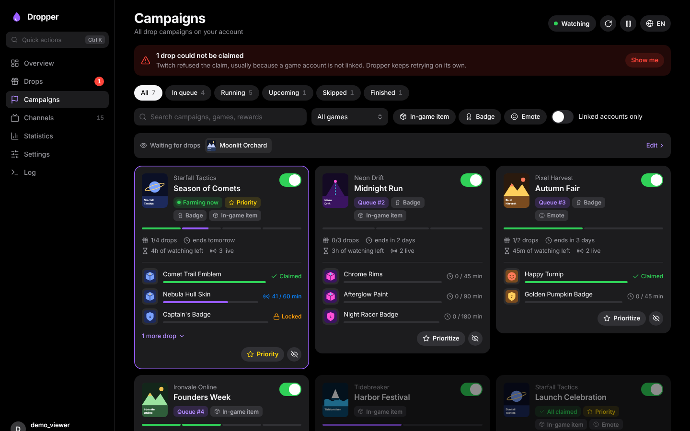
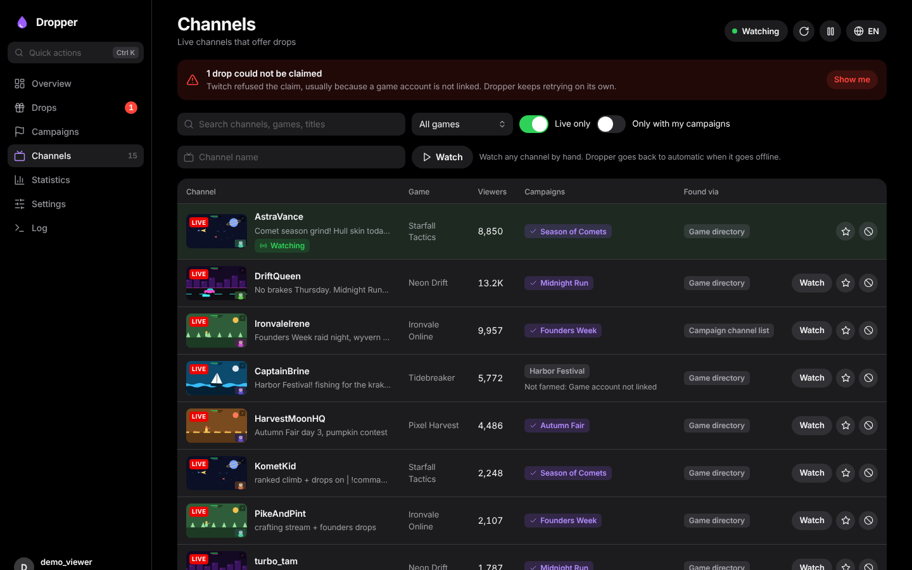
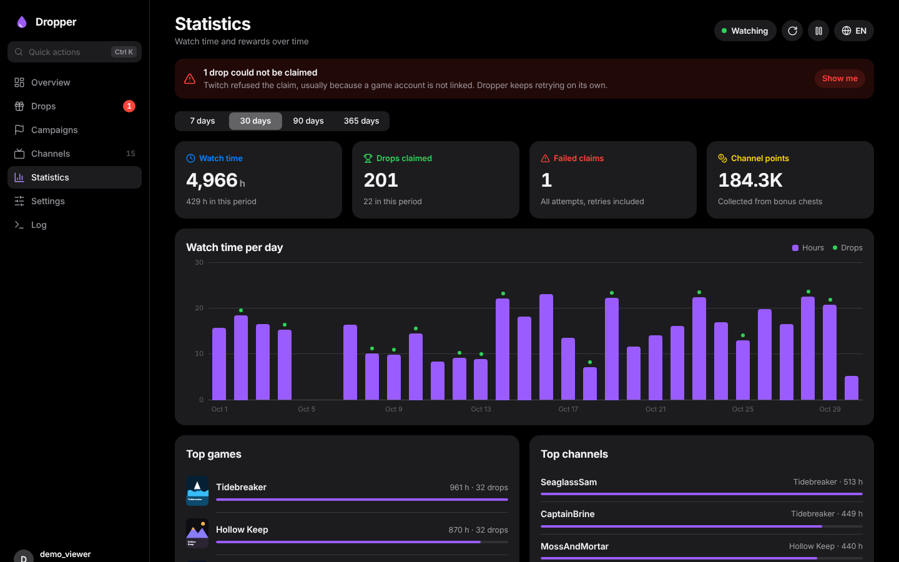

Twitch drops, on autopilot.
Dropper finds the streams that have drops right now, watches them in the background and claims every reward the moment it is ready. You get a clean web UI to steer it.
This is the real web UI, running on simulated data in your browser. The games and streamers are made up, and time runs fast so you can watch drops fill up and get claimed.
Set it up once. Stop missing drops.
Everything the old config file did now lives in the web UI and applies right away, without a restart.
Finds the channels for you
Knows every running campaign, searches the game directory for streams with drops enabled and asks each channel which campaigns it really serves.
Claims reliably
Four independent ways to claim: real-time events, a per-minute progress check, an inventory sweep every five minutes and retries with a fallback claim ID.
Switches on its own
When a stream ends, changes games or stops giving progress, Dropper moves to the next channel and tells you why it picked it.
Your priorities first
Order games by priority, watch for games that have no campaign yet, exclude what you don't care about, prefer or block channels.
Discord notifications
Hear about claimed drops, failed claims, finished campaigns and new drops for games you watch, with your own sender name and picture.
No password needed
You log in like on a TV: confirm a code on twitch.tv/activate. The session and all your data stay in your own data folder.
A tour of the web UI
Dark, calm and quick, on a big screen or your phone. Try every screen in the demo.




How it works
Dropper watches the way a TV app does, without downloading video, and one stream at a time, because that is how Twitch counts drop progress.
Start the container
One Docker container with the web UI on port 8080. Images for amd64 and arm64 are on the GitHub Container Registry.
Enter the code
Open the web UI and type the eight-character code on twitch.tv/activate. That's the whole login.
Lean back
Dropper picks campaigns by your priorities, finds live channels and claims every drop. Check in whenever you like.
Install
Runs anywhere Docker runs: a home server, a NAS, a Raspberry Pi.
# docker-compose.yml
services:
dropper:
image: ghcr.io/mki002/dropper-app:latest
container_name: Dropper
restart: unless-stopped
ports:
- "8080:8080"
volumes:
- ./data:/datadocker run -d --name Dropper --restart unless-stopped \ -p 8080:8080 -v "$(pwd)/data:/data" \ ghcr.io/mki002/dropper-app:latest
# Docker → Add Container
Repository: ghcr.io/mki002/dropper-app:latest
Port: 8080 → 8080
Path: /data → /mnt/user/appdata/dropper
Variables: PUID=99 PGID=100Then open http://<server>:8080 and enter the code it shows on twitch.tv/activate. Set WEBUI_PASSWORD to protect the web UI. More in the README.
Questions
Does Dropper see my Twitch password?
No. It uses Twitch's device login: you confirm a code on twitch.tv/activate while signed in to Twitch. Dropper keeps the resulting session in your data folder and nowhere else.
Why one channel at a time?
Twitch only counts drop progress for one stream per account at a time. Watching several streams would not make drops faster.
What happens when a claim fails?
Usually the game account is not linked yet. The Drops tab shows Twitch's reason with a link to connect the account, and Dropper retries on its own, right away once the account is linked.
Is the demo connected to Twitch?
No. The demo is the real web UI with a small simulation in your browser. Every game, streamer, stream and chat message in it is made up.